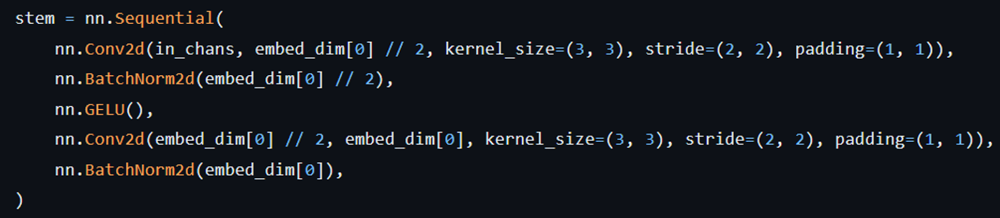
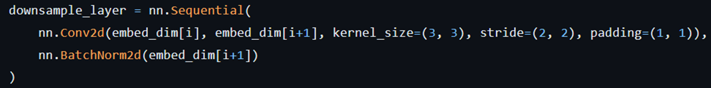

前言
今天介紹的這篇是 vision transformer 領域的一篇論文，作者的主要貢獻是提出 Bi-Level Routing Attention， 這種 attention 使得 query 可以動態地抓取關聯 key-value pairs，而且計算複雜度比起其他的 attention 要低得多。 這個模型可用於多種影像任務上。
如果對 attention 比較不熟悉的話，可以先到這篇文章瞭解喔😉
其他模型的設計方法

首先介紹各種不同的 attention 機制，上面四種 attention 分別是 Local Attention、Axial Attention、Dilated Attention 和 Deformable Attention。而示意圖中的星星符號表示目標 token 的位置，綠色和黃色的小格子則代表該 token 要找出對應的 key-value pairs 的範圍，所以這四種 attention 其實比起最原始的 Vanilla Attention 還要節省了很多比對 key-value pairs 的時間成本。
而今天要介紹的 attention 比起上面的方法還要節省更多計算成本，而且計算起來更靈活。
Bi-Level Routing Attention
這張是 Bi-Level Routing Attention 方法的偽代碼，總共分為如下的三個部分：
這篇有個不同的點要先說明：
在以往的 attention 中，通常輸入只會被分割成很多 patchs，但是這篇的做法會拆成 patchs(or tokens) 和 regions(or local windows)兩種 level，在attention 外面其實已經做好 patch 的拆分了(Patch Embedding & Patch Merging)。
第一部分：Region partition and input projection
這個部分主要是對輸入進行前處理。
第一行可以看到 patchify() 將輸入切割成多個 regions，總共有 S^2 個 regions，每個 region 共有 (H/S)*(W/S) 個小 tokens，也就是 HW/S^2 個 tokens。所以在第一行程式碼上的註解，x 的形狀從 (H, W, C) 被改變為 (S^2, HW/S^2, C)，也就代表了 (region 的數量, token 的數量, channel)。
再來第二行就是對於每個小 token 各取他們的 query、key、value 出來。
第二部分：Region-to-region routing with directed graph
第一行分別取每個 region 的 query 和 key，計算出來的結果就是 query_r 和 key_r，接著第二行再根據 query_r 和 key_r 計算所有 regions 的關聯性 (和 attention 計算注意力權重的方法是一樣的)，最後第三行每個 region 都會分別取前 k 個和該 region 最相關的 region，也就是 I_r。
第三部分：Token-to-token attention
現在每個 region 都有他們各自最相關的前 k 個 regions 了，接下來我們就要回到 token level 的計算，讓每個 token 在計算 attention 時可以只和前 k 個的區域進行計算，不需要和所有 token 一起計算。
以下是第三部分的示意圖，藍色的部分是目標 query，黃色的部分是由第二部分所計算出來的前 k 個區域，再來對 query 和 key_g 做注意力權重的計算， 基本上和原始的 attention 算法是一模一樣，比較特別的是，作者在 attention 最後面加上了 LCE(Local Context Enhancement) 。
Biformer
接下來是模型架構的部分，整體模型是一個常見的四層金字塔結構，像是在 Swin transformer 裡也是用這樣的架構。圖中四個 block 的上方表示是進入 Biformer block 的輸入大小， 會有不同的大小是因為 patch embedding 和 patch merging 會做 patch 的拆分。其中這四個部分的 k 分別是 1, 4, 16, S^2， 後面 k 越取越大是因為 token 會隨著輸入下採樣越來越小，會越來越相似，所以需要取多一點才能比較容易判斷。
Patch Embedding：
 Patch merging：

作者設計了三種大小的模型架構，分別是 Tiny、Small、Base 三種，Channel 就可以把他想像成是模型的寬度，Blocks 則是模型的長度。
在 Biformer Block 裡的架構：
實驗
這篇論文分別在影像分類、物件偵測、語義分割、實例分割四種任務上進行實驗，
影像分類
使用 ImageNet-1K dataset 進行實驗，其中有額外加上 tokem labeling 的準確率是最高的。
物件偵測 & 實例分割
使用 COCO2017 dataset 進行實驗。
語義分割
使用 ADE20K dataset 進行實驗。
消融實驗
針對架構中四個層不同的 topk 和分割 region 的參數 S，這邊做了消融實驗。 作者提到由於 padding 會造成計算成本提高和模型效能下降的問題，因此在影像分類的任務中將 S 設定為 7(在此任務中的輸入大小是 224x224x3)， 在物件偵測任務中設定為 16，語義分割中則是設定為 8。